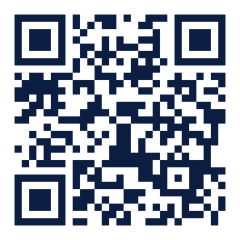
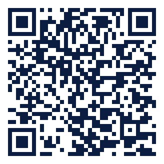
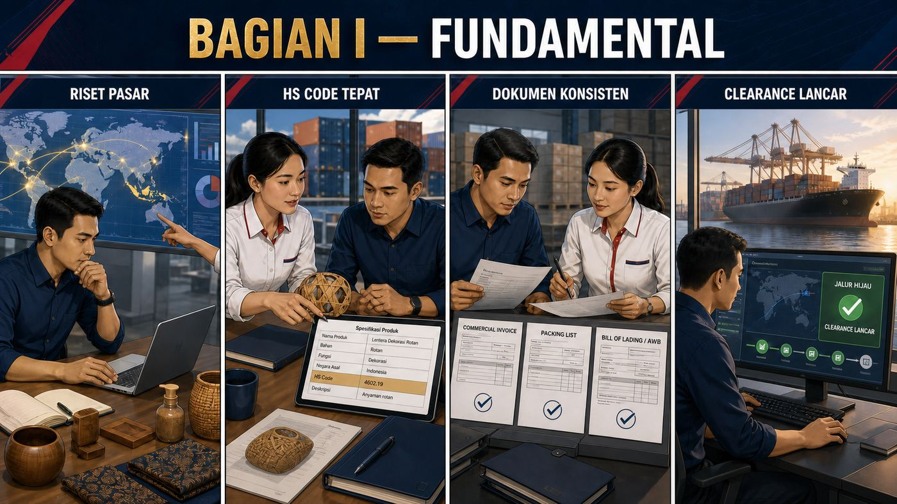
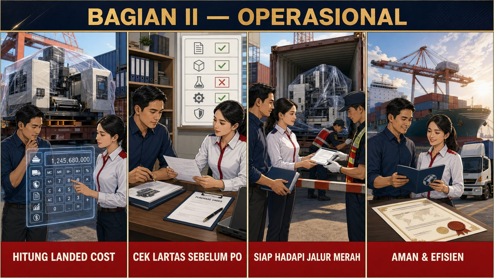
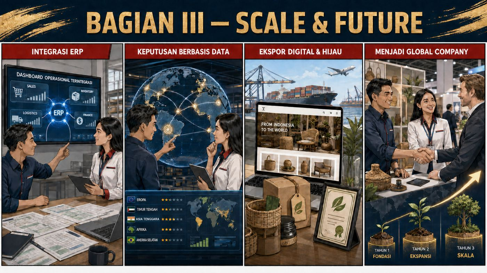
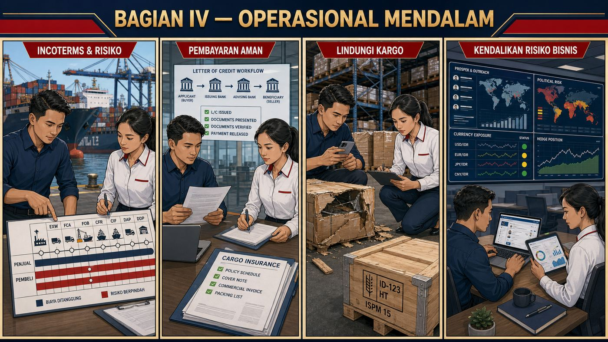

Buku kerja, bukan buku baca. Gunakan sambil mengerjakan pengiriman Anda yang sesungguhnya.
Selamat datang, calon pemain global. Panduan ini disusun oleh Tim M2B — praktisi logistik & kepabeanan yang setiap hari menangani dokumen, kontainer, dan regulasi di lapangan. Isinya sengaja ringkas dan padat aksi: setiap bab dirancang untuk selesai dibaca dalam 5–10 menit, lalu langsung dipraktikkan.
| Profil Anda | Jalur Baca yang Disarankan |
|---|---|
| Pemula total | Baca berurutan Bab 1 → 22. Fondasi dulu, teknis kemudian. |
| Sudah pernah impor/ekspor | Langsung ke Bagian II (operasional) dan Bagian IV (modul mendalam). |
| Pemilik UMKM yang mau ekspansi | Bab 1, 10, 12–16 (fasilitas, riset pasar, roadmap 3 tahun). |
| Profesional logistik / PPJK | Bagian IV sebagai referensi cepat Incoterms, L/C, klaim, ISPM 15. |
© 2026 PT. Mora Multi Berkah — M2B | Logistic | Solution | Partner. Hak cipta dilindungi undang-undang.
Salinan e-book ini diterbitkan dengan watermark identitas pembeli. Dilarang menggandakan atau menyebarluaskan tanpa izin tertulis — setiap salinan yang beredar dapat ditelusuri ke pemilik aslinya.
Lima bonus menyertai e-book ini. Semuanya dikirim dan diklaim melalui e-mail pembelian Anda.
| Bonus | Cara Klaim | Kapan |
|---|---|---|
| Template Invoice & Packing List siap pakai | Tautan unduhan ada di e-mail pengiriman e-book (tombol "Download Semua Bonus Template") | Bersamaan e-book |
| Bonus Toolkit: L/C, Checklist & Lartas | Folder yang sama dengan template di atas | Bersamaan e-book |
| Grup Telegram eksklusif pembaca | Tombol "Join Telegram Group" di e-mail pengiriman | Bersamaan e-book |
| E-book versi Bahasa Inggris | Balas e-mail pengiriman / chat WA dengan Order ID Anda | Sesuai permintaan |
| E-sertifikat digital | Kirim ulasan jujur Anda via WA/e-mail setelah selesai membaca | Setelah review |
|
 Toolkit Interaktif Gratis Kalkulator landed cost, checklist kesiapan ekspor, referensi Incoterms & glossary — pindai atau buka ebook.m2b.co.id/toolkit.html |
 Konsultasi Langsung Tim M2B Pertanyaan seputar materi, klasifikasi HS Code, atau kebutuhan pengiriman — WhatsApp +62 812-6302-7818 |

Ekspor-impor bukan sekadar "mengirim barang ke luar negeri" — ia permainan strategi yang menuntut cara berpikir baru.
| Pilar | Artinya bagi Bisnis Anda |
|---|---|
| Market Intelligence | Membaca kebutuhan negara lain sebelum kompetitor — data dulu, intuisi kemudian. |
| Regulatory Compliance | Menjadikan aturan sebagai senjata, bukan hambatan: yang paham aturan bergerak paling cepat. |
| Reputation Building | Reputasi kepabeanan dan pembayaran yang bersih adalah aset yang menurunkan biaya Anda dari tahun ke tahun. |
Langkah 1 — Riset permintaan pasar. Jangan menjual apa yang Anda punya; jual apa yang mereka butuhkan. Malaysia membutuhkan sawit olahan, Jepang membutuhkan energi, Tiongkok membutuhkan nikel — setiap negara punya "daftar belanja"-nya sendiri.
Langkah 2 — Pahami nuansa budaya. Jepang menghargai detail dan ketepatan waktu; Timur Tengah membangun hubungan dulu, bisnis kemudian; Eropa menuntut kepatuhan standar. Budaya menentukan cara Anda bernegosiasi.
Langkah 3 — Bangun visi jangka panjang. Satu pengiriman untung besar tidak ada artinya dibanding partnership sepuluh tahun. Pebisnis global membangun jalur, bukan sekadar transaksi.
HS Code adalah "DNA barang" Anda: menentukan tarif, izin, dan fasilitas. Salah satu digit saja, konsekuensinya nyata.
Enam digit pertama berlaku universal di seluruh dunia (WCO); dua digit terakhir adalah perincian nasional Indonesia di BTKI.
| Kesalahan | Dampak | Pencegahan |
|---|---|---|
| Kode terlalu umum | Bea masuk lebih tinggi dari seharusnya | Teliti spesifikasi teknis produk |
| Kode tidak sesuai fisik barang | Barang ditahan, potensi denda kekurangan bayar | Dokumentasi & foto produk lengkap |
| Tidak mengikuti pembaruan BTKI | Sanksi administrasi, notul berulang | Review klasifikasi berkala |
1 — Analisis komposisi barang. Tiga pertanyaan kunci: bahan utamanya apa? fungsi utamanya apa? bagaimana cara kerjanya secara teknis? Jawaban ketiganya menentukan pos tarif.
2 — Rujuk basis data resmi. BTKI melalui insw.go.id (menu Indonesia NTR), portal beacukai.go.id, dan WCO HS Database untuk perbandingan internasional.
3 — Konsultasikan ke ahlinya. PPJK berpengalaman, asosiasi industri, atau ajukan Penetapan Klasifikasi Sebelum Impor (PKSI) ke Bea Cukai untuk kepastian hukum atas barang yang rutin Anda impor.
Tiga dokumen menggerakkan seluruh transaksi. Konsistensi antar-dokumen lebih penting daripada keindahan masing-masing.
| Dokumen | Fungsi | Titik Rawan |
|---|---|---|
| Commercial Invoice | Bukti transaksi & dasar penetapan nilai pabean | Deskripsi barang terlalu umum; harga tidak wajar |
| Packing List | Rincian isi tiap kemasan | Jumlah/berat tidak cocok dengan fisik |
| Bill of Lading / AWB | Bukti pengangkutan & dokumen kepemilikan | Nama consignee salah; notify party keliru |
Pendukung: PO/Sales Contract, NPWP & NIB, Certificate of Origin (untuk tarif FTA), sertifikat fumigasi & phytosanitary sesuai komoditas.
| Aspek | PIB (Pemberitahuan Impor Barang) | PEB (Pemberitahuan Ekspor Barang) |
|---|---|---|
| Arah | Barang masuk Indonesia | Barang keluar Indonesia |
| Pelapor | Importir / PPJK | Eksportir / PPJK |
| Konsekuensi | Pungutan impor (BM, PPN, PPh) | Pengawasan & pelaporan devisa |
Sistem penjaluran adalah manajemen risiko: Bea Cukai menilai profil Anda, bukan nasib Anda.
| Faktor | Cara Kerjanya |
|---|---|
| Profil perusahaan | Rekam jejak kepatuhan yang baik menurunkan skor risiko; riwayat pelanggaran menaikkannya untuk waktu lama. |
| Karakteristik barang | Elektronik, tekstil, dan pangan tergolong berisiko tinggi; bahan baku industri umumnya berisiko rendah. |
| Negara asal | Mitra FTA dengan rekam jejak baik cenderung dipercaya; rute berisiko mendapat pengawasan ekstra. |
Clearance modern bersifat proaktif: dokumen bergerak lebih dulu daripada barangnya.
Pre-arrival submission. PIB dapat diajukan sebelum barang tiba (pre-notification). Dokumen lengkap di muka berarti penjaluran & pembayaran selesai lebih awal — barang turun kapal langsung bergerak.
Integrasi INSW. Indonesia National Single Window (insw.go.id) menyatukan perizinan lintas instansi — karantina, perdagangan, kesehatan — dalam satu pintu daring. Satu kali submit, semua instansi membaca data yang sama.
Pelacakan real-time. Status dokumen dan barang dipantau melalui portal CEISA Bea Cukai / sistem PPJK Anda. Masalah terdeteksi dini = biaya penumpukan terhindar.
| Kriteria | Tindakan Bila Belum |
|---|---|
| HS Code seluruh produk terdokumentasi | Review klasifikasi bersama PPJK |
| Landed cost dihitung sebelum deal | Buat SOP perhitungan (lihat Bab 6) |
| Lartas tiap produk terverifikasi | Cek di INSW sebelum PO (lihat Bab 7) |
| Dokumen tersinkron dengan pembukuan/ERP | Mulai integrasi bertahap (lihat Bab 11) |
| SOP clearance tertulis | Dokumentasikan proses yang berjalan |
| Audit internal tiap 6 bulan | Jadwalkan sekarang |

Landed cost adalah harga sebenarnya barang Anda saat tiba di gudang — bukan cuma harga barang plus ongkir.
Asumsi ilustrasi: BM 10% sesuai BTKI, importir ber-API & PKP, kurs pajak Rp 15.500/USD. Verifikasi tarif & kurs berjalan sebelum transaksi.
| Komponen | Nilai | Dasar Perhitungan |
|---|---|---|
| Harga barang (FOB) | USD 50.000,00 | Kontrak dengan supplier |
| Freight Shanghai–Jakarta | USD 2.500,00 | Penawaran forwarder |
| Asuransi (0,5%) | USD 262,50 | 0,5% × (FOB + freight) |
| Nilai CIF | USD 52.762,50 | Dasar nilai pabean |
| Nilai pabean dalam rupiah | Rp 817.818.750 | CIF × kurs pajak 15.500 |
| Bea Masuk (10%) | Rp 81.781.875 | 10% × nilai pabean |
| Nilai impor (dasar pajak) | Rp 899.600.625 | Nilai pabean + BM |
| PPN impor (11%) | Rp 98.956.069 | 11% × nilai impor |
| PPh Pasal 22 (2,5%) | Rp 22.490.016 | 2,5% × nilai impor (ber-API; tanpa API 7,5%) |
| Jasa PPJK + surveyor | Rp 12.400.000 | ± USD 800 |
| Trucking pelabuhan → gudang | Rp 12.400.000 | ± USD 800 |
| Total uang keluar (cash out) | ± Rp 1.045.846.710 | Seluruh komponen di atas |
Bagi Pengusaha Kena Pajak (PKP), PPN impor adalah pajak masukan yang dapat dikreditkan, dan PPh 22 adalah kredit pajak penghasilan — keduanya bukan biaya permanen, melainkan "uang parkir" di pajak.
| Perspektif | Nilai |
|---|---|
| Total cash out (arus kas yang harus disiapkan) | ± Rp 1.045,8 juta |
| Landed cost efektif PKP (dasar hitung HPP & harga jual) = nilai pabean + BM + biaya lokal (PPN & PPh 22 dikreditkan) | ± Rp 924,4 juta |
Menetapkan harga jual dari angka cash out membuat harga Anda tidak kompetitif; menetapkannya tanpa menghitung PPh 22 dan kurs pajak membuat Anda boncos. Hitung keduanya, pahami bedanya.
Lartas — larangan dan pembatasan — adalah gerbang yang harus Anda lewati sebelum barang menyentuh pelabuhan.
| Kategori | Contoh | Konsekuensi |
|---|---|---|
| Larangan impor | Narkotika, senjata ilegal | Dilarang total — pidana |
| Pembatasan impor | Tekstil, elektronik tertentu, besi baja | Wajib persetujuan impor / laporan surveyor |
| Pembatasan ekspor | CPO, bijih mineral, kayu | Wajib izin/kuota ekspor |
| Pembatasan dua arah | Produk pertanian & hewan | Izin di kedua sisi + karantina |
| Instansi/Rezim | Berlaku Untuk | Bentuk Kepatuhan |
|---|---|---|
| SNI wajib | Helm, mainan anak, peralatan listrik, ban | Uji lab → SPPT-SNI → penandaan |
| BPOM | Pangan olahan, kosmetik, suplemen | Izin edar MD/ML, notifikasi kosmetik |
| Karantina | Tanaman, hewan & produknya | Phytosanitary / veterinary certificate + pemeriksaan |
| SDPPI/Postel | Perangkat telekomunikasi, ponsel | Sertifikat perangkat, registrasi IMEI |
Perkiraan waktu pengurusan yang realistis: identifikasi kebutuhan izin 1–3 hari; penyiapan dokumen 4–7 hari; proses instansi 1–3 minggu tergantung jenis izin. Izin menyusul setelah barang berangkat = biaya penumpukan yang tidak perlu.
Jalur merah bukan vonis bersalah — ia pemeriksaan. Yang menentukan hasilnya adalah persiapan Anda.
Yang diperiksa petugas: kesesuaian jenis & jumlah barang dengan pemberitahuan, kondisi fisik, label/marking, dan kemasan.
| Hak Anda | Kewajiban Anda |
|---|---|
| Hadir/diwakili saat pemeriksaan | Kooperatif dan responsif terhadap petugas |
| Meminta penjelasan dasar pemeriksaan | Menyediakan tenaga & alat buka-tutup kemasan |
| Mengajukan keberatan atas penetapan | Menjaga keamanan barang selama proses |
Dalam perdagangan lintas negara, reputasi lebih mahal daripada margin — dan penipuan mengincar keduanya.
| Modus | Cara Kerja | Konsekuensi Hukum |
|---|---|---|
| Under-invoicing | Nilai di dokumen lebih rendah dari transaksi nyata | Pidana kepabeanan, denda, blacklist |
| Over-invoicing | Nilai digelembungkan (modus transfer pricing) | Audit pajak, sanksi |
| Misklasifikasi | HS Code sengaja disalahkan demi tarif rendah | Penalti, penyitaan |
| Phantom shipment | Dokumen atas pengiriman yang tidak pernah ada | Pidana penjara |
Dari sisi supplier: harga jauh di bawah pasar · menolak L/C tanpa alasan jelas · meminta pembayaran ke rekening pribadi · dokumen tidak konsisten · tidak punya rekam jejak yang bisa diverifikasi.
Dari sisi buyer: urgensi tidak wajar · meminta modifikasi dokumen · alamat perusahaan tidak jelas · ulasan negatif dari mitra sebelumnya.
Pemerintah menyediakan banyak "diskon resmi". Yang membedakan pemakainya hanyalah pengetahuan.
| FTA | Mitra | Manfaat Utama |
|---|---|---|
| ACFTA | ASEAN–China | Tarif preferensi ribuan pos tarif |
| AKFTA | ASEAN–Korea | Tarif preferensi |
| IJEPA | Indonesia–Jepang | Banyak pos otomotif & industri 0% |
| AIFTA | ASEAN–India | Akses pasar raksasa Asia Selatan |
| RCEP | 15 negara Asia-Pasifik | Kumulasi asal barang antar-anggota |
Kunci klaim tarif FTA: Certificate of Origin (atau deklarasi asal barang) yang benar bentuk & pengisiannya, plus aturan Rules of Origin yang terpenuhi. Salah formulir = tarif normal berlaku.
KITE Pembebasan: bahan baku impor dibebaskan BM & pajak impor, dengan syarat hasil produksinya diekspor dalam periode tertentu. KITE Pengembalian: BM yang telanjur dibayar dikembalikan setelah realisasi ekspor dibuktikan. Cocok untuk industri manufaktur berorientasi ekspor, termasuk skala IKM.
| Fasilitas | Kelebihan | Cocok Untuk |
|---|---|---|
| Kawasan Berikat | Penangguhan BM & pajak impor | Manufaktur ekspor |
| KEK | Insentif fiskal & kemudahan izin | Investasi skala besar |
| Gudang Berikat | Penimbunan tanpa pungutan di muka | Distributor importir |

Saat volume naik, spreadsheet menjadi sumber kesalahan termahal Anda.
| Tanpa ERP | Dengan ERP |
|---|---|
| Data terpencar di banyak file & kepala orang | Satu sumber data untuk semua tim |
| Komunikasi manual, rawan miskoordinasi | Notifikasi & status real-time |
| Laporan disusun berhari-hari, rawan salah | Dashboard siap setiap saat |
| Panik setiap kali ada audit | Jejak audit tersedia otomatis |
Inventory — pelacakan multi-gudang, batch & masa kedaluwarsa, titik pemesanan ulang otomatis.
Dokumentasi perdagangan — invoice, packing list, dan draf PIB/PEB dihasilkan dari data yang sama; arsip digital tertata.
Kepatuhan — pengingat masa berlaku izin, pemetaan Lartas per produk.
Keuangan — jurnal otomatis, multi-mata-uang, rekonsiliasi bank.
Pasar yang tepat tidak ditebak — ia ditemukan di dalam data yang tersedia gratis.
| Alat | Kegunaan |
|---|---|
| ITC TradeMap | Arus ekspor-impor 220+ negara per HS Code — siapa membeli apa dari siapa |
| UN Comtrade | Basis data perdagangan PBB untuk analisis jangka panjang |
| BPS & Kemendag | Data resmi nasional, harga patokan ekspor |
| ITPC / Atase Perdagangan | Market brief per negara langsung dari lapangan |
1 — Peta kompetitor global. Siapa eksportir terbesar produk Anda? Ke negara mana mereka menjual? Pada level harga berapa? TradeMap menjawab ketiganya dalam satu tabel.
2 — Deteksi peluang. Cari negara dengan pertumbuhan impor tinggi untuk HS Code Anda, permintaan naik namun pemasok terbatas, dan pola musiman yang bisa Anda layani.
3 — Inteligensi harga. Rentang harga pasar (unit value), margin potensial setelah landed cost, dan posisi harga Anda terhadap pesaing.
Marketplace global memangkas jarak antara produk Anda dan pembeli di benua lain.
| Platform | Karakter | Struktur Biaya (tipikal) |
|---|---|---|
| Amazon | B2C umum, volume besar | Komisi kategori + biaya fulfilment |
| Etsy | Handmade, vintage, kriya | Biaya listing + komisi transaksi |
| Alibaba | B2B grosir | Keanggotaan tahunan + komisi |
| eBay | Umum & lelang | Insertion fee + final value fee |
| TikTok Shop | Produk viral, live commerce | Komisi rendah, kompetisi tinggi |
Listing produk — foto profesional, deskripsi kaya kata kunci, harga kompetitif, strategi ulasan sejak hari pertama.
Logistik & fulfilment — pilih antara dikelola platform (mis. FBA), kirim sendiri, atau 3PL — sesuaikan dengan volume dan modal kerja.
Pembayaran & kurs — rekening multi-currency (Wise, Payoneer), pahami potongan pajak platform, dan rencanakan repatriasi dana.
Keberlanjutan telah berubah dari nilai tambah menjadi tiket masuk — terutama ke pasar Eropa.
| Sertifikasi | Lingkup | Relevan Untuk |
|---|---|---|
| RSPO | Kelapa sawit berkelanjutan | Produk sawit & turunannya |
| FSC | Pengelolaan hutan lestari | Kayu, kertas, furnitur |
| Fairtrade | Perdagangan yang adil | Kopi, kakao, tekstil |
| ISO 14001 | Manajemen lingkungan | Semua industri |
| Organik (EU/USDA) | Pertanian organik | Pangan, kosmetik |
Negara sudah membangun jembatannya. Tugas Anda tinggal menyeberang.
| Lembaga | Yang Bisa Anda Manfaatkan |
|---|---|
| Kemendag / ITPC | Informasi pasar, misi dagang, pameran internasional |
| KBRI / Atase Perdagangan | Akses & verifikasi buyer di negara akreditasi |
| Kementan / Atase Pertanian | Fasilitasi ekspor produk pertanian |
| LPEI (Indonesia Eximbank) | Pembiayaan, penjaminan & asuransi ekspor |
| Skema | Penyedia | Fungsi |
|---|---|---|
| Modal kerja ekspor | Bank umum / LPEI | Membiayai produksi pesanan |
| Export financing | LPEI | Suku bunga kompetitif untuk eksportir |
| L/C & negosiasi wesel | Bank devisa | Keamanan & percepatan pembayaran |
| Penjaminan / asuransi ekspor | LPEI / ASEI | Proteksi gagal bayar buyer |
Go global bukan lompatan — ia tangga dengan anak tangga yang bisa direncanakan.
Target: 3–5 negara aktif · porsi ekspor 10–20% dari omzet · proses terstandardisasi · tim khusus 1–2 orang.
Target: 8–12 negara · porsi ekspor 30–40% · fasilitas FTA/KITE dimanfaatkan · kanal digital aktif.
Target: 15+ negara · porsi ekspor 50%+ · merek dikenal di segmennya · kehadiran regional.

Tiga huruf dalam kontrak menentukan siapa membayar apa — dan siapa menanggung rugi bila terjadi apa-apa.
Incoterms (International Commercial Terms, diterbitkan ICC dan direvisi tiap dekade) mengatur tiga hal: titik peralihan tanggung jawab, pembagian biaya, dan peralihan risiko kerusakan/kehilangan. Selalu tuliskan versinya dalam kontrak: "CIF Tanjung Priok, Incoterms® 2020".
| Situasi Anda | Pilihan | Alasan |
|---|---|---|
| Importir pemula, minim pengalaman | CIF / DAP | Penjual mengurus pengangkutan; Anda fokus di clearance |
| Importir ingin kendali logistik & biaya | FOB / FCA | Anda memilih forwarder & menegosiasikan freight sendiri |
| Eksportir pemula | FOB | Tanggung jawab berakhir saat barang di atas kapal |
| Eksportir menjaga pengalaman buyer VIP | CIF / DDP | Layanan penuh, margin jasa lebih besar |
| Kesalahan | Dampak | Solusi |
|---|---|---|
| Memakai versi lama (2010) | Ambiguitas kontrak | Tulis eksplisit "Incoterms 2020" |
| FOB untuk kargo udara | Term tidak valid | FOB/CIF/CFR/FAS hanya untuk laut — pakai FCA/CIP |
| Lokasi tidak spesifik | Sengketa biaya | "FOB Tanjung Priok", bukan sekadar "FOB" |
| Mengira CIF = barang pasti aman | Rugi saat klaim | CIF hanya wajib asuransi minimum (ICC-C) — minta ICC-A bila perlu |
Aturan emasnya: makin kenal mitranya, makin sederhana metodenya.
| Metode | Keamanan Penjual | Kecepatan | Biaya | Cocok Untuk |
|---|---|---|---|---|
| T/T advance | ●●●●● | Cepat | Rendah | Seller kuat / order kecil |
| L/C | ●●●●○ | Lambat | Tinggi | Mitra baru, nilai besar |
| D/P | ●●●○○ | Sedang | Sedang | Buyer dikenal |
| D/A | ●●○○○ | Sedang | Sedang | Buyer sangat dipercaya |
| Open account | ●○○○○ | Cepat | Rendah | Partner bertahun-tahun |
Prinsip inti L/C: bank membayar berdasarkan kesesuaian dokumen, bukan kondisi barang. Satu huruf berbeda dari syarat L/C = discrepancy = pembayaran tertunda. Teliti syarat sebelum menyetujui.
Jenis L/C: Irrevocable (standar) · Confirmed (dijamin bank kedua — untuk negara berisiko) · Transferable (untuk trading company) · Revolving (kontrak berulang) · Standby (jaminan cadangan).
Variasi T/T: in advance (aman bagi seller) · after B/L copy (berimbang) · tempo 30/60/90 hari (aman bagi buyer).
Escrow: dana dititipkan pihak ketiga, dirilis setelah buyer mengonfirmasi — praktis untuk transaksi daring (mis. trade assurance di platform B2B).
Klaim yang berhasil ditentukan dalam 24 jam pertama — oleh dokumentasi, bukan negosiasi.
| Kerusakan | Penyebab Umum | Contoh |
|---|---|---|
| Fisik | Bongkar muat kasar | Pecah, penyok, patah |
| Air/kelembapan | Kondensasi kontainer, kebocoran | Elektronik korosi, karton hancur |
| Kontaminasi | Tumpahan muatan lain | Pangan tercemar |
| Suhu | Reefer gagal | Frozen food mencair |
| Kekurangan/hilang | Pencurian, salah muat | Qty tidak sesuai, kontainer hilang |
| Klausul | Lingkup | Rekomendasi |
|---|---|---|
| ICC-C | Musibah besar saja (kebakaran, kandas, tabrakan) | Barang curah bernilai rendah |
| ICC-B | ICC-C + basah air laut, terjatuh saat muat/bongkar | Barang nilai menengah |
| ICC-A | All risks (kecuali pengecualian standar) | Elektronik, mesin, barang bernilai tinggi |
0–24 jam: foto/video dari semua sudut sebelum barang dipindahkan · catat waktu-lokasi-kondisi · beri tahu carrier, forwarder & asuransi · kumpulkan B/L, invoice, packing list.
24–72 jam — Notice of Claim tertulis: tanggal kejadian, nama kapal/penerbangan, uraian & jumlah kerusakan, estimasi kerugian, lampiran bukti.
3–14 hari — survey: surveyor asuransi memeriksa; dampingi dan lengkapi dokumen yang diminta.
14–60 hari — settlement: disetujui penuh → pembayaran; sebagian → negosiasikan dengan data; ditolak → ajukan banding dengan bukti tambahan.
Kemasan berlapis: pelindung dalam (bubble/foam) → luar (double-wall carton / crate) → kontrol iklim (silica gel, VCI untuk logam, insulasi untuk sensitif suhu). Label jelas: This Way Up · Keep Dry · Fragile · Temperature Sensitive · Do Not Stack.
Palet kayu tanpa cap sepele kelihatannya — sampai satu kontainer penuh ditolak masuk negara tujuan.
ISPM 15 adalah standar internasional perlakuan kemasan kayu (palet, peti, dunnage) untuk mencegah penyebaran hama lintas negara. Berlaku hampir di semua tujuan ekspor utama.
| Material | ISPM 15? | Keterangan |
|---|---|---|
| Kayu solid (palet, crate, dunnage) | WAJIB | Harus diberi perlakuan & marking |
| Plywood / triplek | Tidak | Proses produksinya sudah membunuh hama |
| Chipboard / OSB / MDF | Tidak | Engineered wood dikecualikan |
| Presswood pallet | Tidak | Alternatif murah untuk one-way shipment |
Marking harus terlihat, terbaca, dan permanen — di dua sisi berlawanan. Cat tangan atau cap luntur = dianggap tidak ada.
| Negara | Perlakuan atas Pelanggaran |
|---|---|
| Amerika Serikat | Ditolak masuk — re-ekspor atau pemusnahan |
| Uni Eropa | Penahanan, perlakuan wajib atas biaya pengirim |
| Australia | Inspeksi ketat; pemusnahan bila tidak sesuai |
| Jepang | Penolakan & pengembalian ke asal |
Marketplace meminjamkan Anda pembeli. Kanal sendiri memberi Anda pelanggan.
| Keterbatasan Marketplace | Keunggulan Kanal Langsung |
|---|---|
| Komisi menggerus margin | Margin penuh milik Anda |
| Branding terbatas, perang harga | Ekuitas merek terbangun |
| Bergantung pada kebijakan platform | Hubungan & data pelanggan Anda kuasai |
Teknis: domain .com, HTTPS, mobile-friendly, kecepatan muat < 3 detik, sitemap & schema markup. Konten: riset kata kunci berbahasa buyer (bukan bahasa Anda), incar long-tail 3–5 kata ("indonesian patchouli oil supplier"), halaman produk yang detail (spesifikasi, MOQ, kapasitas, sertifikasi), studi kasus & testimoni.
Bangun daftar dari form website + lead magnet (mis. spec sheet), dan patuhi aturan privasi negara tujuan (GDPR untuk Eropa). Alat gratis untuk memulai: Mailchimp / Brevo.
Dua risiko yang tak bisa Anda hentikan — tetapi sepenuhnya bisa Anda kelola.
| Risiko | Bentuk | Mitigasi |
|---|---|---|
| Perubahan tarif | Kenaikan bea masuk mendadak di negara tujuan | Diversifikasi pasar; klausul penyesuaian harga |
| Embargo/sanksi | Larangan dagang antarnegara | Pantau berita; hindari konsentrasi di negara rawan |
| Instabilitas politik | Konflik, pergantian rezim | Asuransi risiko politik; term pembayaran aman |
| Regulasi baru | Standar lingkungan/keamanan baru | Ikuti asosiasi industri & KBRI setempat |
Tiga kebiasaan pelindung: due diligence negara (laporan lembaga internasional, brief KBRI) · jangan menggantungkan > 40% omzet pada satu negara · pastikan kontrak memuat klausul force majeure & price adjustment.
Rupiah melemah menguntungkan eksportir dan memukul importir; menguat berlaku sebaliknya. Pergerakan 5% saja dapat menghapus seluruh margin transaksi yang tipis — karena itu eksposur kurs harus dihitung, bukan dirasakan.
| Instrumen | Cara Kerja | Kelebihan / Kekurangan |
|---|---|---|
| Forward | Kunci kurs hari ini untuk transaksi tanggal tertentu | Pasti & sederhana / tetap terikat bila kurs bergerak menguntungkan |
| Futures | Serupa forward, diperdagangkan di bursa dengan leverage | Likuid / risiko kerugian leverage besar |
| Options | Hak (bukan kewajiban) menukar pada kurs tertentu | Proteksi + tetap bisa menikmati kurs baik / ada premi |
| Swap | Pertukaran arus mata uang dengan bank | Efisien untuk kebutuhan dua arah reguler |
Sembilan prinsip yang merangkum 22 bab — tempelkan di dinding kerja Anda.
| Kebutuhan | Saluran | Estimasi Respons |
|---|---|---|
| Konsultasi HS Code & kepabeanan | WA +62 812-6302-7818 | < 2 jam kerja |
| Simulasi landed cost / FTA | ebook@m2b.co.id | < 24 jam |
| Jasa forwarding & PPJK | m2b.co.id | < 48 jam |
| Komunitas pembaca | Grup Telegram (tautan di e-mail pembelian) | — |
Kami di M2B — Logistic | Solution | Partner percaya setiap bisnis, sekecil apa pun, punya potensi go global. Yang dibutuhkan hanyalah pengetahuan yang tepat, persiapan yang matang, dan partner yang bisa diandalkan.
Anda memiliki update gratis selamanya — setiap edisi baru dikirim ke e-mail pembelian Anda.
| Versi | Rilis | Perubahan |
|---|---|---|
| 1.0 | 2025 | Edisi perdana — 16 bab fundamental, operasional & scale. |
| 2.0 | Awal 2026 | +6 bab modul mendalam: Incoterms 2020, pembayaran internasional, klaim asuransi, ISPM 15, B2B digital, mitigasi risiko. |
| 2.1 | Juli 2026 | Desain baru menyeluruh · Bab 6 dirombak: PPh Pasal 22, kurs pajak, dan pembedaan cash out vs landed cost efektif · diagram baru (penjaluran, peta Incoterms, alur L/C) · daftar isi bernomor halaman & navigasi PDF · halaman klaim bonus · pemutakhiran kontak. |
Punya usulan materi? Kirim ke ebook@m2b.co.id — usulan terbaik kami wujudkan dan kontributornya kami sebut di edisi berikutnya.